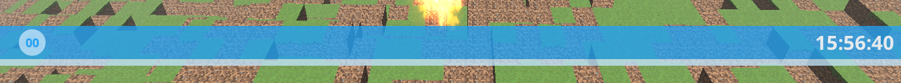

HUD 重温 - NanoVG
在之前的章节中，解释了如何使用正交投影在场景的顶部渲染形状和纹理。 在本章中，我们将学习如何使用 NanoVG 库来渲染反锯齿矢量图形，以简单的方式构建更复杂的HUD。
还有很多其他库可用于支持此任务，例如Nifty GUI，Nuklear等。在本章中，将重点介绍Nanovg，因为它非常易于使用，但如果您想制作菜单和窗口，开发出复杂的GUI按钮交互，您应该查看Nifty GUI。
开始使用NanoVG 的第一步是在pom.xml文件中添加依赖关系。
...
<dependency>
<groupId>org.lwjgl</groupId>
<artifactId>lwjgl-nanovg</artifactId>
<version>${lwjgl.version}</version>
</dependency>
...
<dependency>
<groupId>org.lwjgl</groupId>
<artifactId>lwjgl-nanovg</artifactId>
<version>${lwjgl.version}</version>
<classifier>${native.target}</classifier>
<scope>runtime</scope>
</dependency>
在我们开始使用NanoVG之前，我们必须在OpenGL里面设置一些东西，这样代码测试样本才能正常工作。 我们需要启用对模板缓冲区测试的支持。 到现在为止，已经讨论了颜色和深度缓冲区，但是我们没有提到模板缓冲区。 该缓冲区为每个像素存储一个值
，该像素用于控制应该绘制哪些像素。 该缓冲区用于根据其存储的值屏蔽或丢弃绘图区域。 例如，它可以用于以简单的方式剪切场景的某些部分。 我们通过将这一行添加到Window类
来启用模板缓冲区测试：
glEnable(GL_STENCIL_TEST);
由于程序正在使用另一个缓冲区，因此我们在每次渲染调用之前还必须注意删除其值。 因此，需要修改Renderer类的clear方法
public void clear() {
glClear(GL_COLOR_BUFFER_BIT | GL_DEPTH_BUFFER_BIT | GL_STENCIL_BUFFER_BIT);
}
我们还将添加一个用于激活抗锯齿的新窗口选项。 因此，在Window类中，将通过以下方式启用它：
if (opts.antialiasing) {
glfwWindowHint(GLFW_SAMPLES, 4);
}
现在我们准备使用NanoVG库。 我们要做的第一件事就是丢弃已经创建的HUD作品，那就是IHud接口的着色器，Renderer类中的HUD渲染方法等。你可以在源代码中找到这一点。
在这种情况下，新的Hud类会照顾它的渲染，所以我们不需要将它委托给Renderer类。 让我们通过定义该类来开始讨论，它将有一个init方法来设置构建HUD所需的库和资源。 该方法是这样定义的：
public void init(Window window) throws Exception {
this.vg = window.getOptions().antialiasing ? nvgCreate(NVG_ANTIALIAS | NVG_STENCIL_STROKES) : nvgCreate(NVG_STENCIL_STROKES);
if (this.vg == NULL) {
throw new Exception("Could not init nanovg");
}
fontBuffer = Utils.ioResourceToByteBuffer("/fonts/OpenSans-Bold.ttf", 150 * 1024);
int font = nvgCreateFontMem(vg, FONT_NAME, fontBuffer, 0);
if (font == -1) {
throw new Exception("Could not add font");
}
colour = NVGColor.create();
posx = MemoryUtil.memAllocDouble(1);
posy = MemoryUtil.memAllocDouble(1);
counter = 0;
}
我们要做的第一件事就是创建一个NanoVG环境。 在这种情况下，我们使用的是OpenGL3.0 后端，因为引用了org.lwjgl.nanovg.NanoVGGL3来命名空间。 如果要激活抗锯齿功能先得激活NVG_ANTIALIAS标志。
接下来，我们使用先前加载到 ByteBuffer 中的True Type(全真字体)来创建。 给它分配一个名称，以便稍后在呈现文本时使用它。 其中一个重要的事情是，在使用字体时，用于加载字体的ByteBuffer必须保存在内存中。 也就是说，它不能被垃圾收集，除非你有一个很好的核心转储它。 这就是为什么它作为类属性存储的原因。
然后，我们创建一个颜色实例和一些有用的变量，这些变量将在渲染时使用。 在渲染初始化之前，该方法在游戏init方法中被调用：
@Override
public void init(Window window) throws Exception {
hud.init(window);
renderer.init(window);
...
Hud类还定义了一个渲染方法，在场景渲染完成之后应该调用这个渲染方法，这样HUD也会同时被绘制。
@Override
public void render(Window window) {
renderer.render(window, camera, scene);
hud.render(window);
}
Hud类的render方法是从这里开始的：
public void render(Window window) {
nvgBeginFrame(vg, window.getWidth(), window.getHeight(), 1);
我们必须做的第一件事就是调用nvgBeginFrame方法。 nvgBeginFrame`` method. 所有的NanoVG渲染操作都必须包含在两个之中nvgBeginFrame与nvgEndFrame.\``根据以下参数：
- NanoVG的文本
- 要渲染的窗口的大小 ..
-
像素比例。 如果您需要Hi-DPI的支持，则可以更改这个值。 对于这个示例，我们将它设置为1。
然后我们创建几个条子，它会占据整个屏幕。 第一个是这样画的：
// Upper ribbon
nvgBeginPath(vg);
nvgRect(vg, 0, window.getHeight() - 100, window.getWidth(), 50);
nvgFillColor(vg, rgba(0x23, 0xa1, 0xf1, 200, colour));
nvgFill(vg);
渲染一个形状时，第一个应该调用的方法是nvgBeginPath，它指示NanoVG开始绘制一个新的形状。 然后我们定义要绘制的内容，矩形，填充颜色以及调用我们绘制的nvgFill。
您可以查看源代码的其余部分，以查看其余形状的绘制方式。 在渲染字体之前，不需要调用 nvgBeginPath。
在完成绘制所有形状之后，我们只需调用nvgEndFrame来结束渲染，但在离开该方法之前还有一件重要的事情要做。 我们必须恢复OpenGL状态。 NanoVG修改OpenGL状态以执行其操作，如果状态未正确恢复，您可能会看到场景未正确呈现或者甚至已被消除。 因此，我们需要恢复我们渲染所需的相关OpenGL状态。 这是在Window类中委托的：
// Restore state
window.restoreState();
该方法是这样定义的:
public void restoreState() {
glEnable(GL_DEPTH_TEST);
glEnable(GL_STENCIL_TEST);
glBlendFunc(GL_SRC_ALPHA, GL_ONE_MINUS_SRC_ALPHA);
if (opts.cullFace) {
glEnable(GL_CULL_FACE);
glCullFace(GL_BACK);
}
}
这就是所有的 ，代码完成。 当你执行这个样本时，你会得到如下的结果：
